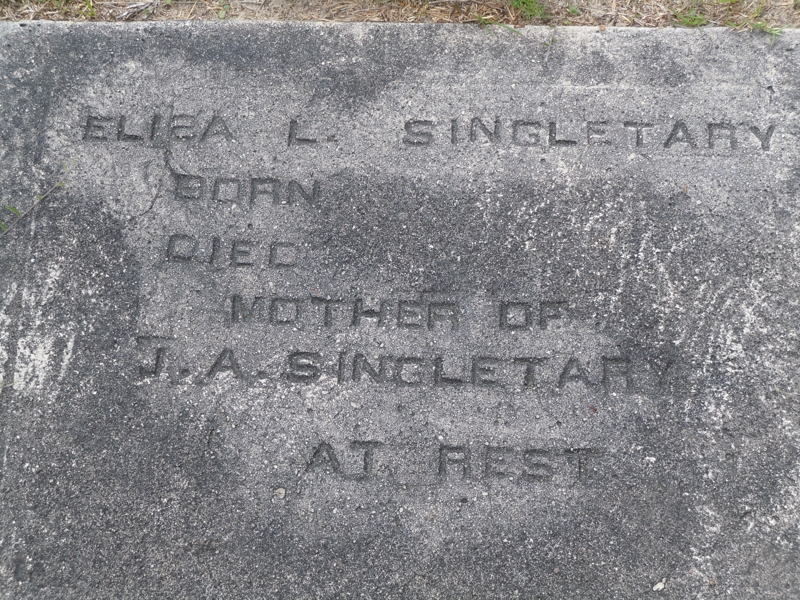

Eliza Singletary
Life Events
Family
Spouse:
Children
Military Service
No military service information has been added.
Biography
Eliza Singletary was born in South Carolina, although her exact birth date and maiden name have not been established. Historical records identify her as Eliza B. Singletary, Eliza Singletary, and Elizabeth Singletary. Her gravestone appears to identify her as Eliza L. Singletary. The differences in her recorded name and age have not been fully resolved.
In 1850, Eliza was living in Sumter District, South Carolina, in the household of Jacob Singletary, a farmer. The federal census recorded her as Eliza B. Singletary, age thirty-five. The household also included Silas P., Sarah R., Mary E., George M., Jane H., and Samuel J. Singletary.
By 1860, the family had relocated to Decatur County, Georgia. The federal census recorded Eliza as thirty-four years old and born in South Carolina. The household included several individuals previously recorded in South Carolina, along with John Singletary, age eight, and a younger Jacob Singletary, age seven, both born in Georgia.
In 1870, Eliza appears to have been recorded as Elizabeth Singletary, age forty-five, in the household of Jacob Singletary in Decatur County, Georgia. Other household members included Silas, Rachel, Sarah A., Mary E., John, and a younger Jacob Singletary.
By June 1880, Eliza was living in Lafayette County, Florida, where the federal census identified her as head of household, age fifty-four. Her household included Sarah Singletary, Mary E. Singletary, John V. Singletary, and Jacob Singletary. The record provides evidence that members of the family had moved from Georgia to northern Florida.
In 1900, Eliza was living in Lafayette County, Florida, in a household associated with William Johnson and Sarah Singletary Johnson. The census recorded her birth as May 1812 and her age as eighty-eight. These details conflict with several earlier census records, particularly those from 1860, 1870, and 1880, which suggest a birth around 1825–1826.
Eliza is buried at Bell's Mill Creek Cemetery, now known as Bethel Creek Baptist Church Cemetery, in Day, Lafayette County, Florida. Her gravestone bears the inscription 'ELIZA L. SINGLETARY / MOTHER OF / J. A. SINGLETARY / AT REST.' The inscription identifies her middle initial as L., although the 1850 federal census recorded her as Eliza B. Singletary. The identity of J. A. Singletary has not been conclusively established. The gravestone contains no birth or death dates, and Eliza's exact date of death remains unknown.
Photos
No additional photographs have been added.
Grave & Burial

Bethel Creek Baptist Church Cemetery, Day, Lafayette County, Florida
Sources
-
1850 United States Federal Census — Jacob Singletary Household
Type: census1850 United States Federal Census, Sumter District, South Carolina, household 1617. Jacob Singletary, age 50, farmer, and Eliza B. Singletary, age 35, were enumerated with Silas P., Sarah R., Mary E., George M., Jane H., and Samuel J. Singletary. FamilySearch transcribes the surname as Singletarry. NARA publication M432, film 859.
Location: Sumter District, South Carolina
Supports: Jacob Singletary's residence in South Carolina in 1850, Jacob Singletary's approximate birth year and occupation, Eliza B. Singletary's residence and reported age in 1850, Members of the Singletary household in 1850
-
1860 United States Federal Census — Jacob Singletary Household
Type: census1860 United States Federal Census, 19th District, Decatur County, Georgia, page 34. Jacob Singletary, age 56, and Eliza Singletary, age 34, were enumerated with Silas, Sarah, Mary, George, Harrietta, Samuel, John, and Jacob Singletary. John, age 8, and the younger Jacob, age 7, were recorded as born in Georgia. FamilySearch transcribes the surname as Singletarry. NARA publication M653.
Location: 19th District, Decatur County, Georgia
Supports: Jacob and Eliza Singletary's residence in Decatur County, Georgia, in 1860, John Singletary's presence in Jacob's household, The family's probable migration from South Carolina to Georgia, Birthplaces and reported ages of household members
-
1870 United States Federal Census — Jacob Singletary Household
Type: census1870 United States Federal Census, Jones District, Decatur County, Georgia, household 108, page 16, beginning at line 28. Jacob Singletary, age 69, was enumerated with Elizabeth Singletary, age 45, Silas, Rachel, Sarah A., Mary E., John, and Jacob Singletary. Jacob and Elizabeth were recorded as born in South Carolina. FamilySearch transcribes the surname as Singletarry. NARA publication M593.
Location: District 720, Decatur County, Georgia
Supports: Jacob Singletary's residence in Decatur County, Georgia, in 1870, Jacob Singletary's reported age and South Carolina birthplace, Elizabeth Singletary's reported age and birthplace, John Singletary's presence in Jacob's household in 1870
-
1880 United States Federal Census - Eliza Singletary Household
Type: census1880 United States Federal Census, Lafayette County, Florida, page 30, stamped page 185, lines 35-39. The household is headed by Eliza Singletary, age 54, and includes Sarah Singletary, age 24; Mary E. Singletary, age 22; John V. Singletary, age 21; and Jacob Singletary, age 20. The record documents John Vershal Singletary's residence in Lafayette County with members of his family.
Location: Lafayette County, Florida
Supports: Eliza Singletary was living in Lafayette County, Florida, in June 1880., Eliza Singletary was recorded as the head of household., Sarah Singletary, age 24, was living in Eliza's household., Mary E. Singletary, age 22, was living in Eliza's household., John V. Singletary, age 21, was living in Eliza's household., Jacob Singletary, age 20, was living in Eliza's household.
-
1900 U.S. Federal Census – William and Sarah Johnson Household
Type: census1900 United States Federal Census, Lafayette County, Florida, lines 21–24. The household includes William Johnson, head; Sarah Johnson, wife; Mary Singletary, sister-in-law; and Eliza Singletary, mother-in-law. Sarah was recorded as born in March 1840, age sixty, and having given birth to no children, with none living. Both William and Sarah were recorded as having been married for thirty years, although their original marriage record documents a ceremony on January 30, 1890.
Location: Lafayette County, Florida
Supports: Sarah Johnson was born in March 1840 in South Carolina., Sarah Johnson was married to William Johnson., Eliza Singletary was Sarah Johnson's mother., Mary Singletary was Sarah Johnson's sister., Sarah reported zero children born and zero children living., William and Sarah were both recorded as having been married for thirty years.
-
1968 Bethel Creek Baptist Cemetery Survey – Lafayette County, Florida (1968)
Type: cemeteryCemetery survey conducted in May 1968 by Moseley and Ruth Verrill at Bethel Creek Baptist Cemetery in Lafayette County, Florida. The transcription appears on pages 146–147 of a cemetery records compilation. Page 147 lists John V. Singletary with dates 1859–1911; Mary Eveline Singletary as his wife, without dates; Jessie Van Singletary and John W. Wesley Singletary without dates; Eliza Singletary as the mother of J. A. Singletary; Reverend Jacob Singletary, March 15, 1852 – May 14, 1931; Ally Ida Singletary, May 28, 1873 – October 16, 1945; and William Robert Singletary, May 3, 1894 – February 22, 1961, identified as a son of J. A. Singletary. The survey records information observed or transcribed in 1968 and does not independently establish the accuracy of all birth and death dates.
Location: Bethel Creek Baptist Cemetery, Lafayette County, Florida
Supports: John V. Singletary's gravestone was transcribed with dates 1859–1911., Mary Eveline Singletary was identified as the wife of John V. Singletary., Jessie Van Singletary was listed in the cemetery survey., John W. Wesley Singletary was listed in the cemetery survey., Eliza Singletary was identified as the mother of J. A. Singletary., Reverend Jacob Singletary's dates were recorded as March 15, 1852, and May 14, 1931., Ally Ida Singletary's dates were recorded as May 28, 1873, and October 16, 1945., William Robert Singletary was identified as a son of J. A. Singletary.